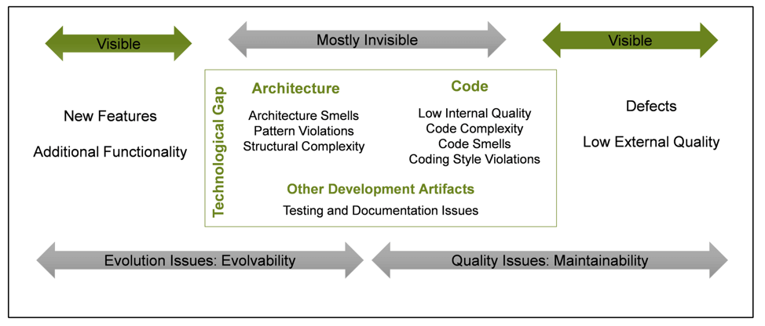

技术债¶
定义:
技术债是指在当前以某种方式做某件事的好处，以换取在将来某个时候以另外的方式做这件事的成本。
Note
交付第一次代码就像陷入债务。 债务是可以加快开发速度，只有通过重写代码，及时偿还债务。如果不偿还债务，就会发生危险。 把时间花在写一些不正确的代码上的每一分钟都算作该债务的利息。 整个软件项目可能在未合并代码的部署，面向对象设计或其他方面的债务问题而陷入停顿。 —— Ward Cunningham（沃德・坎宁安）
技术债是无法避免的，只是产生技术债或多或少的问题，不还技术债付出的代价更高。
Technical debt（技术债 / 技术负债）= design debt（设计负债）= code debt（代码负债）
抬头看天是为了找到正确的方向，有时因为一些原因（如开发时间紧）往别的方向上拉了一会
一定要记得这是临时行为，而且这些临时行为会导致「技术债」

The Future of Managing Technical Debt 这张全景图主要从两个方向来分析技术债对于软件的影响：可维护性（Maintainability）、可演进性（Evolvability），同时结合问题的可见性（Visibility）分析技术债对于软件开发过程的影响。¶
可维护性（Maintainability） 主要指的是狭义上的代码问题，即代码本身可读性如何、是否容易被他人所理解、是否有明显的代码坏味道、是否容易扩展和增强。
可演进性（Evolvability） 指的是系统适应变化的能力。 在生物学中它指的是种群产生适应性的遗传多样性，从而通过自然选择进化的能力。对软件系统来说，可演进性（Evolvability）本质上一种架构的元特征（Meta-Characteristic），描述的是软件架构趋于目标演进的能力，演进目标并不仅局限于支撑功能快速迭代（Iteration）的灵活性（Flexibility），也可以是其他的架构属性（Quality Attribute），比如高可用性、可扩展性。
针对 可见性 的分析可以依赖于外部视角:
对于最终用户来说:
软件功能、设计和用户体验等方面的缺陷，导致用户无法顺利完成既定的业务流程，
那么对于用户不可见的代码问题就升级为了可见的质量问题；
对于需求提供方来说:
臃肿的技术架构、散落各处的业务逻辑导致产品无法快速响应需求变化，导致交付延期，
那么对于无技术背景的业务人员来说，难以理解的、不可见的架构问题就升级为了可见的软件交付风险。
分类¶
技术债务
运营债务
技术债大概分为三大类:
文档负债（包括需求分析负债，开发文档负债，测试文档负债）
代码负债（包括架构负债，编码负债，业务负债）
管理负债（包括工期负债，人员负债，协同负债，成本负债）
编码负债:
1. 代码命名规范：代码命名没有规范，存在大量杂乱不堪的命名代码。
2. 代码复杂度：条件语句过多，流程控制过于复杂，代码嵌套过多。
3. 代码耦合度：代码中参数，类，接口高耦合，需要大量修改代码。
4. 代码行数：存在大量未使用的代码。
技术债治理的四条原则¶
1. 核心领域优于其他子域¶
核心域（Core Domain）
支撑子域（Supporting SubDomain）
通用子域（Generic Subdomain）
Note
The Core Domain should deliver about 20% of the total value of the entire system, be about 5% of the code base, and take about 80% of the effort.
2. 可演进性优于可维护性¶
技术债导致的可演进性问题大多和架构相关，比如服务和服务之间的循环依赖、模块和模块之间的过度耦合、缺少模块化和服务边界的 “大泥球” 组件等，在添加新的功能时，这些架构的坏味道会给产品功能的迭代造成不少麻烦。比如服务之间如果存在循环依赖的问题，当你对系统进行少量更改时，它可能会对其他模块产生连锁反应，这些模块可能会产生意想不到的错误或者异常。此外，如果两个模块过度耦合、相互依赖，则单个模块的重用也变得极其困难。
可演进性问题可能会直接导致开发速度滞后，功能无法按期交付，使项目出现重大的交付风险。而且问题发生的时候往往已经 “积重难返”，引入的技术债务没有在合适的时间得到解决，其产生的影响会像 “滚雪球” 一样越滚越大。在我所经历过的项目中有一个不太合理的模型设计，由于错过了最佳的纠正时间，为了实现新的业务功能最终不得不做服务拆分时，发现需要修改的调用点竟有 1000 多处，而且这些修改点很难借助于 IDE 或者重构工具来一次性解决，不但增加了团队的负担还直接导致了后续功能需求的交付延期。
和可演进性问题相比，高复杂度、霰弹式修改等代码级别问题也很重要，但是相对来说我们更加关注软件适应变化的能力，通过提升软件系统的适应性减少软件最终交付价值的前置时间，快速收集真实用户的反馈，持续不断迭代产品、完善设计。
所以我们在治理技术债时坚持的另外一个原则是 “可演进性优于可维护性” 。如果把上文提到的可维护性和可演进性使用不同的颜色来标识的话（红色表示可演进性问题、蓝色表示可维护性问题），我们可以得到这样的结果：
3. 明确清晰的责任定义优于松散无序的任务分配¶
刻意设计（Intentional Design）
浮现式设计（Emergent Design）
4. 主动预防优于被动响应¶
这个原则本质上是缩短反馈周期，提前发现潜在问题，除了必要的代码审查流程（Code Review）、提升团队能力之外还可以借助于自动化工具来提前发现问题。
对于代码可维护性方面，很多比较成熟的静态代码扫描工具都可以自动识别这类问题，比如 SonarQube、checkstyle 等，但是仅仅在持续集成上（Continuous Integration）运行还不够，需要和团队一起自定义扫描规则，并把检查代码扫描报告作为代码审查的一部分，逐步形成一种正向的反馈机制。
在技术债治理的过程中，实践可以剪裁，甚至原则也可以妥协，因为比这几条原则更重要的是获得关键干系人的支持。作为技术人员或者技术领导者，不仅要有前瞻性的技术洞察力、锐意变革的魄力，还需要以 “旁观者” 视角，置身事外地观察自己所处的环境，思考技术改进究竟对于自己、他人、团队、公司和客户究竟产生了什么价值。
减少债务的方法¶
1. 评估你的处境, 弄清楚你欠了多少¶
这一步最关键。一旦团队决定必须偿还他们的技术债务（这不是一个容易的决定 —— 而且必须与业务一起做出），他们就必须弄清楚他们实际上欠了多少债务。最好的方法是进行自上而下的设计和代码审查。
步骤:
首先看看你的设计文档。
它是最新的吗？
它是否准确地描述了设计中最重要的点？
然后，你可能想首先审查下代码的哪些部分给你带来了最大的麻烦
哪些部分最难修改？
哪些地方出错率最高？
那些部分对你的业务来说最重要？
找出这些问题的答案，可以帮助你对你需要做的事情进行排序，找出方法改善你的处境。
2. 停止引入新债务¶
最难的部分是学会组织文化变革，这样你就不会让积累的债务超过合理的服务能力。在用户故事中包含债务偿还活动。
为了修复发现的问题，你必须花时间来实现修复，这意味着你在纠正问题时会搁置新的开发。关于这一点，没有什么完美的方法，无论你采取什么方法，你都需要与业务协商如何平衡技术债务偿还和新功能开发。下面是一些我们认为有效的策略。
4. 按计划行事！¶
关键是，让偿还债务成为你长期活动的一部分。确保你能在合理的时间内偿还，而不是让它越积越多。
5. 跟踪和评估进展¶
你需要能够报告你在债务偿还活动中取得的进展。
采集一些指标，用于向管理和业务证明，花费在这些活动中的时间是值得的，这点特别重要:
例如，很多时候你需要重构代码来提高性能，这时，手上有正确的统计数据来显示用户体验的改进是很重要的。 同样，当你在改进一个简单的代码库时，添加新特性的速度是另一个向业务证明价值的重要指标。
实例¶
假设你正在领导一个团队创建一个内容管理系统。这个内容管理系统需要能够展示内容。根据你所属组织的类型，你将通过头脑风暴来讨论你想要以各种形式展示的内容的分类。
也许你们是一个大型组织，拥有营销团队或用户体验调研员，要捕捉关于用户想要什么相关的数据。也许你们是一个比较小的团队，没有那些资源，但是正与屈指可数的几个客户沟通，以便直接根据他们的具体需求定制你们的软件。或者，你是一个单独的开发者，正在从事一个业余项目或者做兼职。无论如何，你都将在某个时候到达那种状态，规范在手且准备开工。
因此，现在开始开发这些内容组件，当它向后端请求要展示的内容后在前端进行渲染。
假设你已经确定了两类用户想要展示的内容 —— 博客帖子和图片帖子。博客帖子是长文本条目，而图片帖子是一些短条目，带有一张图片和图片下方的一两句描述性的文本。
你是否应该将它们创建为各自独特类型的组件？你可以简单地创建一个 “blogPost” 对象和一个 “imagePost” 对象，各自具有一些属性。这看起来很简单来发布到产品 —— 博客帖子有一个段落数组来渲染，而图片帖子有一个图片字段和一个紧随其后渲染的段落字段。或者你应该创建一个 “masterPost” 对象，用一个 “type” 字段来决定如何渲染它？或者你可以根据对象中存在的字段来动态生成一个 “masterPost” 对象，然后在渲染内容时以某种方式对其进行解构？
目前来看，创建两种不同类型的对象，blogPost 和 imagePost，是最简单的。在你完成调研之后，利益相关者的规范是非常清楚的。如果你使用更通用的 masterPost 方法来存储内容，那么你必须测试各种额外的情况，没有实际的立马可见的好处。我们必须尽快将这个产品推向市场 —— 它需要为下个季度的营销计划做好准备，该计划会在两个月内生效。因此，这显然是一个开和关的情况。让我们将这些票放入队列并进行分配，我们将在下一个工作阶段完成！
然而，一两个月后，你的利益相关者现在要求你开发一个 “recipe post”、一个 “tutorial post”、一个 “life event post” 等等…
不管怎样，你应该明白了。需求已经变更。你需要增加这些新发现的功能。虽然你之前花了一点儿时间来制作各自类型的对象，但似乎创建 “masterPost” 对象更适合一些。你可以用一种比现在更动态的方式来渲染它们。这个方案的工作量有一点儿多，但它现在更适合。而且，其最大好处之一就是你的设计能经得起未来的考验，当新类型的内容被要求时，你只需要为新的字段添加新的渲染方法就可以了。
最初，你花了两周来构建你单独的帖子类别。它只投入生产一个月左右，但已经有足够多的用户生成了足够多的数据，现在你必须将这些数据转换成新的 masterPost 格式。（你难道不想让这些数据保持原样，为特定时期的数据构建独特的渲染实例吗！你敢不敢！）当然，你还需要构建 masterPost 相关功能。转换用户数据必须等到这些功能就绪并经过了测试。如果你一开始就考虑点儿未来的话，这本来应该只花费一个月时间，但现在将额外花费两个月时间。这甚至会超过新的营销活动的开始时间，使得营销团队不得不将他们的活动再延后一个月。总共，你目前在整个项目的这个部分已经花费了三个月时间，而一开始的一点儿远见会将这个时间减少大约三分之二！
谁来负责?¶
这真的是技术债吗？需求变化是技术债吗？谁应该为这类 “失败” 负责？
（提示：这并不是真正的失败。这只是一个做生意的组织的本性。这都是事后诸葛亮。）
当然，这是一个很有争议的话题。在这个决策过程中，似乎有许多力量导致你们没有更好地利用开发资源。你可能在一直修复已知的错误！
无论这个设计缺陷的真正原因是什么，请放心，所有相关方都会指责其他人。用户调研团队没有问对问题；开发团队没有充分讨论产品设计的可预见性；市场营销团队的计划安排对产品团队的工作优先级有太多影响；谁能预测到用户需求的变化呢；CTO 打太多高尔夫球了，没有管理好这些团队和相关个人之间的协作等。
好吧，别再指责别人了！技术债不是任何特定人群的责任。你们整个组织都对此负责。这是因为人类天性中的低效率和缺点，它们在组织框架内相互起作用，因此导致了债务。
组织内不同团队的专家之间的实际的有意义的沟通和信任，是战胜技术债的关键。虽然每个公司都是独特的，但它们都有一个共同点，不论他们做得怎么样 —— 组织内部的人员对彼此的项目和实际需求更坦诚。每一项业务都有独特的需求和需要解决的特殊问题，从而改变讨论的性质。
[InfoQ]欠下 “技术债”，谁负责？: https://www.infoq.cn/article/g9hyluiavciahx11badv
[知乎]浅谈对技术债的理解: https://zhuanlan.zhihu.com/p/150438943